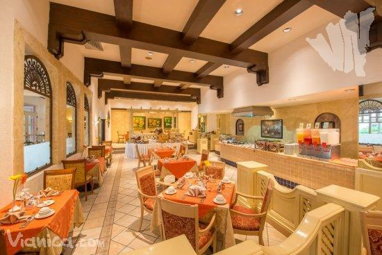

Lugares familiares
Catedral granada
La catedral es uno de los edificios más prominentes de León. Está ubicada en la plaza
central. La primera construcción de este edificio comenzó hace más de dos siglos.
Puede entrar a la catedral, dar un tour, poner sus ojos en una buena pieza de arquitectura
y disfrutar de la linda vista que se puede apreciar desde el techo del edificio. Fue
declarada "Patrimonio de la Humanidad" por la UNESCO en 2011.
Cuando la catedral estaba en construcción, las personas adineradas compraban una tumba
en el subterráneo de la catedral. El dinero se utilizaba para la construcción y luego
para el mantenimiento del edificio. La sepultura más espectacular es la de Rubén Darío,
el poeta más famoso de Nicaragua, cuya tumba está protegida por un León en el centro de
la catedral.


Restaurante la casa blanca
El Restaurante Casablanca ofrece un exclusivo ambiente y elegante decoración, en el interior del hotel Camino Real.
Ubicado a 2 minutos del aeropuerto internacional de Managua, el Casablanca dispone servicios de desayunos, almuerzos
y cenas todos los días desde las 6:00 am, hasta las 11:00 pm.
La especialidad de casa son los platillos de cocina internacional, preparados a partir de ingredientes locales.
El amplio salón del restaurante está dividido en secciones, que pueden ser combinadas para albergar eventos masivos.